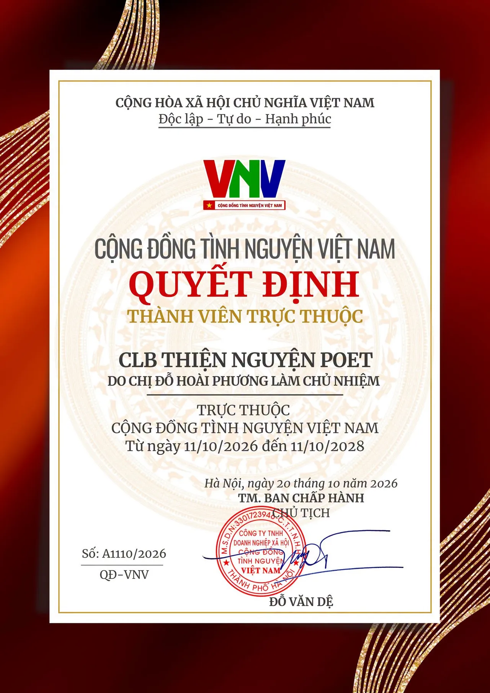
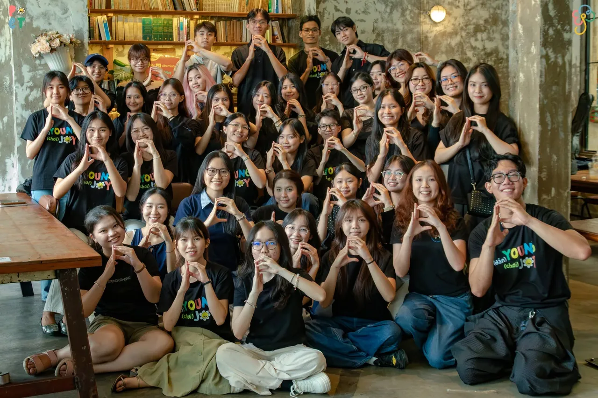

Cột mốc
POET trở thành thành viên trực thuộc Cộng đồng Tình nguyện Việt Nam (VNV)
- Số quyết định
- A1110/2026/QĐ-VNV
- Hiệu lực
- 11/10/2026 – 11/10/2028
- Ngày ký
- 20/10/2026, Hà Nội
Từ những ngày đầu tiên vào năm 2022, POET bắt đầu hành trình của mình với mong muốn góp một phần sức trẻ để mang đến những điều tốt đẹp hơn cho cộng đồng. Qua từng chương trình, từng chuyến đi và những lần gặp gỡ, hành trình ấy dần được nối dài bằng những trải nghiệm, những bài học và cả những tình cảm mà chúng mình may mắn nhận được trên đường đi.
Nhìn lại chặng đường vừa qua, POET đã có cơ hội đồng hành cùng các em học sinh tại những khu vực còn nhiều khó khăn, góp sức cải thiện điều kiện học tập và mang đến những không gian để các em vui chơi, khám phá. Đồng thời, đây cũng là hành trình để mỗi thành viên được học hỏi, trải nghiệm, trưởng thành và cùng nhau biến những mong muốn ban đầu thành những hành động thiết thực.
Để có được những điều ấy, POET biết ơn từng thành viên, tình nguyện viên, nhà tài trợ và tất cả mọi người đã luôn quan tâm, theo dõi và đồng hành cùng chúng mình trên hành trình vừa qua. Mỗi sự đóng góp, mỗi lời động viên đều là một mảnh ghép giúp POET có thêm cơ hội đi xa hơn, kết nối nhiều nguồn lực hơn và vun đắp những giá trị bền vững cho cộng đồng.
Trở thành thành viên trực thuộc Cộng đồng Tình nguyện Việt Nam (VNV) là một dấu mốc ý nghĩa, mở ra thêm những cơ hội để POET học hỏi, kết nối và tiếp tục lan tỏa tinh thần tình nguyện. Chúng mình hy vọng sẽ nhận được sự quan tâm, tin tưởng và đồng hành của mọi người trên những chặng đường sắp tới, để cùng mang thêm những cơ hội học tập, những niềm vui và những trải nghiệm ý nghĩa đến với các em học sinh.

